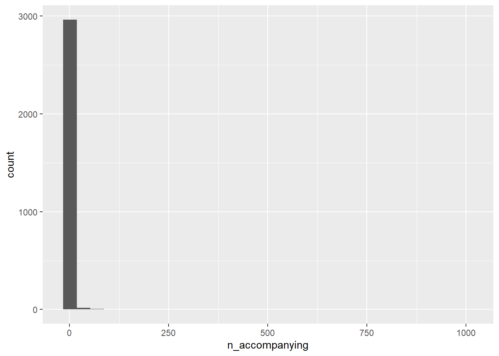
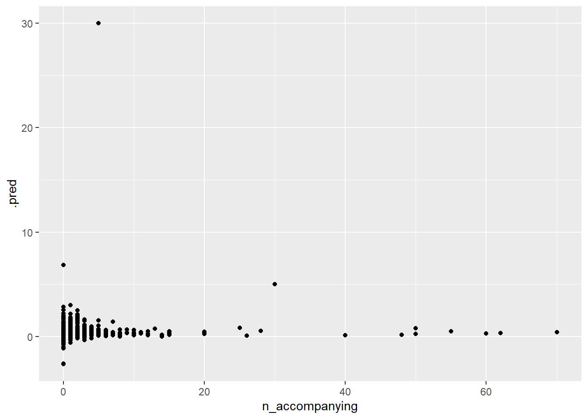
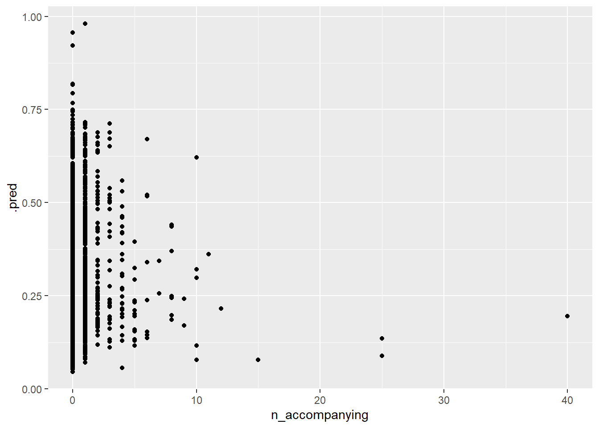

The following object is masked from 'package:yardstick':
spec
The following object is masked from 'package:scales':
col_factor
library(skimr)library(forcats) #for collapsing factorslibrary(ranger) #for random forestlibrary(poissonreg) #for the zeroinflated modellibrary(pscl) #said it was required
Classes and Methods for R originally developed in the
Political Science Computational Laboratory
Department of Political Science
Stanford University (2002-2015),
by and under the direction of Simon Jackman.
hurdle and zeroinfl functions by Achim Zeileis.
── Column specification ────────────────────────────────────────────────────────
Delimiter: ","
chr (1): wind_description
dbl (3): wind_speed_class, wind_speed_knots_min, wind_speed_knots_max
ℹ Use `spec()` to retrieve the full column specification for this data.
ℹ Specify the column types or set `show_col_types = FALSE` to quiet this message.
Rows: 7 Columns: 4
── Column specification ────────────────────────────────────────────────────────
Delimiter: ","
chr (1): sea_state_description
dbl (3): sea_state_class, wave_meters_min, wave_meters_max
ℹ Use `spec()` to retrieve the full column specification for this data.
ℹ Specify the column types or set `show_col_types = FALSE` to quiet this message.
Rows: 12310 Columns: 21
── Column specification ────────────────────────────────────────────────────────
Delimiter: ","
chr (7): hemisphere, activity, cloud_cover, precipitation, observer, censu...
dbl (12): record_id, latitude, longitude, speed, direction, wind_speed_clas...
date (1): date
time (1): time
ℹ Use `spec()` to retrieve the full column specification for this data.
ℹ Specify the column types or set `show_col_types = FALSE` to quiet this message.
Now I want to look at these files, it seems like there’s four of them
skim(beaufort_scale)
Data summary
Name
beaufort_scale
Number of rows
13
Number of columns
4
_______________________
Column type frequency:
character
1
numeric
3
________________________
Group variables
None
Variable type: character
skim_variable
n_missing
complete_rate
min
max
empty
n_unique
whitespace
wind_description
0
1
4
15
0
13
0
Variable type: numeric
skim_variable
n_missing
complete_rate
mean
sd
p0
p25
p50
p75
p100
hist
wind_speed_class
0
1.00
6.00
3.89
0
3
6
9.00
12
▇▅▇▅▇
wind_speed_knots_min
0
1.00
25.62
21.58
0
7
22
41.00
64
▇▃▃▃▃
wind_speed_knots_max
1
0.92
26.83
20.94
1
9
24
41.75
63
▇▃▃▃▃
skim(birds)
Data summary
Name
birds
Number of rows
49019
Number of columns
26
_______________________
Column type frequency:
character
6
logical
11
numeric
9
________________________
Group variables
None
Variable type: character
skim_variable
n_missing
complete_rate
min
max
empty
n_unique
whitespace
species_common_name
691
0.99
9
56
0
321
0
species_scientific_name
1101
0.98
8
55
0
310
0
species_abbreviation
691
0.99
5
18
0
320
0
age
38837
0.21
5
8
0
4
0
wan_plumage_phase
39444
0.20
5
22
0
5
0
plumage_phase
48938
0.00
4
12
0
4
0
Variable type: logical
skim_variable
n_missing
complete_rate
mean
count
sex
49019
0.00
NaN
:
feeding
21095
0.57
0.13
FAL: 24320, TRU: 3604
sitting_on_water
21122
0.57
0.12
FAL: 24427, TRU: 3470
sitting_on_ice
21131
0.57
0.00
FAL: 27847, TRU: 41
sitting_on_ship
21132
0.57
0.00
FAL: 27801, TRU: 86
in_hand
21133
0.57
0.00
FAL: 27883, TRU: 3
flying_past
21128
0.57
0.42
FAL: 16163, TRU: 11728
accompanying
21133
0.57
0.24
FAL: 21227, TRU: 6659
following_ship
21132
0.57
0.42
FAL: 16068, TRU: 11819
moulting
48906
0.00
0.73
TRU: 83, FAL: 30
naturally_feeding
21170
0.57
0.04
FAL: 26867, TRU: 982
Variable type: numeric
skim_variable
n_missing
complete_rate
mean
sd
p0
p25
p50
p75
p100
hist
bird_observation_id
0
1.00
24510.00
14150.71
1
12255.5
24510
36764.5
49019
▇▇▇▇▇
record_id
0
1.00
39568083.99
35937141.23
1083001
6059010.0
13004002
84016021.0
88007036
▇▁▁▃▅
count
2699
0.94
41.93
1283.41
1
1.0
2
4.0
99999
▇▁▁▁▁
n_feeding
26448
0.46
11.31
744.11
0
0.0
0
0.0
99999
▇▁▁▁▁
n_sitting_on_water
26448
0.46
4.13
164.37
0
0.0
0
0.0
20000
▇▁▁▁▁
n_sitting_on_ice
26448
0.46
0.02
2.10
0
0.0
0
0.0
300
▇▁▁▁▁
n_flying_past
26448
0.46
23.61
1195.52
0
0.0
0
1.0
99999
▇▁▁▁▁
n_accompanying
26448
0.46
0.34
7.49
0
0.0
0
0.0
1000
▇▁▁▁▁
n_following_ship
26448
0.46
1.00
2.42
0
0.0
0
1.0
50
▇▁▁▁▁
skim(sea_states)
Data summary
Name
sea_states
Number of rows
7
Number of columns
4
_______________________
Column type frequency:
character
1
numeric
3
________________________
Group variables
None
Variable type: character
skim_variable
n_missing
complete_rate
min
max
empty
n_unique
whitespace
sea_state_description
0
1
5
13
0
7
0
Variable type: numeric
skim_variable
n_missing
complete_rate
mean
sd
p0
p25
p50
p75
p100
hist
sea_state_class
0
1
3.00
2.16
0
1.50
3.0
4.50
6
▇▃▃▃▇
wave_meters_min
0
1
1.20
1.53
0
0.05
0.5
1.90
4
▇▂▁▂▂
wave_meters_max
0
1
2.04
2.26
0
0.30
1.2
3.25
6
▇▁▂▂▂
skim(ships)
Data summary
Name
ships
Number of rows
12310
Number of columns
21
_______________________
Column type frequency:
character
7
Date
1
difftime
1
numeric
12
________________________
Group variables
None
Variable type: character
skim_variable
n_missing
complete_rate
min
max
empty
n_unique
whitespace
hemisphere
11
1.00
1
1
0
2
0
activity
0
1.00
7
18
0
7
0
cloud_cover
4787
0.61
5
16
0
3
0
precipitation
4803
0.61
3
15
0
8
0
observer
0
1.00
8
14
0
26
0
census_method
0
1.00
4
7
0
2
0
season
0
1.00
6
6
0
4
0
Variable type: Date
skim_variable
n_missing
complete_rate
min
max
median
n_unique
date
0
1
1969-07-31
1990-12-21
1984-02-17
1435
Variable type: difftime
skim_variable
n_missing
complete_rate
min
max
median
n_unique
time
2
1
0 secs
84600 secs
45600 secs
315
Variable type: numeric
skim_variable
n_missing
complete_rate
mean
sd
p0
p25
p50
p75
p100
hist
record_id
0
1.00
39820132.28
36204923.64
1083001.0
6059008.2
12030004.50
84026007.75
88007036.00
▇▁▁▂▅
latitude
10
1.00
-39.22
5.89
-69.0
-40.6
-38.27
-35.50
-19.00
▁▁▆▇▁
longitude
11
1.00
159.93
17.42
50.0
152.0
163.12
172.92
179.98
▁▁▁▃▇
speed
4478
0.64
12.71
5.18
0.0
10.5
14.50
16.00
22.00
▂▁▅▇▂
direction
11055
0.10
169.35
102.47
0.0
90.0
165.00
270.00
358.00
▅▇▅▅▅
wind_speed_class
4688
0.62
3.73
1.83
0.0
2.0
4.00
5.00
12.00
▅▇▆▁▁
wind_direction
11018
0.10
174.71
108.50
0.0
68.0
203.00
270.00
350.00
▇▃▃▇▆
air_temperature
11274
0.08
15.28
3.83
0.5
13.4
15.50
17.80
24.60
▁▁▅▇▂
pressure
11540
0.06
1014.84
8.85
991.0
1010.0
1016.00
1021.00
1040.00
▁▃▇▅▁
sea_state_class
4751
0.61
3.56
1.10
1.0
3.0
4.00
4.00
6.00
▂▇▆▃▁
sea_surface_temperature
11625
0.06
14.72
4.08
-1.0
12.8
15.10
17.00
27.00
▁▁▇▆▁
depth
12180
0.01
380.85
352.05
60.0
162.5
290.00
507.50
2200.00
▇▂▁▁▁
Ok so there’s a lot here. I need to find a reasonable question to ask. I am trying to figure out if there is any overlap in variables between the datasets. For example it would be interesting to see if like one bird was seen more often on windy days or something. I think the record_id variable is an overlap between the birds and the ships according to the github it is and also: record_id 1184009, bird_observation_id 974 has no corresponding ship id Meanwhile the other two datasets are just scales that can maybe help interpret the data.
First to clean the data: birds and ships have several variables that have so much missing data that they’re useless so I want to remove them
I like birds. I want to know under which weather conditions I am most likely to get birds accompanying my ship. I will use n_accompanying as my outcome variable and weather conditions measured by the ships as the predictors.
First I need to do more cleaning. There are a lot of NA’s in this data. I am going to use the logical variable, accompanying to help determine what to keep. If accompanying = FALSE and n_accompanying = NA then I will set n_accompanying to 0. If accompanying = NA, or accompanying = TRUE and n_accompanying = NA, then I will remove the datapoint. I can’t tell if under the first circumstance there were no accompanying, or if they forgot to check. Meanwhile under the second I can’t tell how many, so I will remove it.
whole <-merge(birds2, ships2, by="record_id")#merge the data all together!#select my datasetdf <- whole %>%select(bird_observation_id, record_id, accompanying, n_accompanying, speed, cloud_cover, precipitation, wind_speed_class, sea_state_class, season)#get rid of anything where it is unclear if accompanying shipdf <- df %>%drop_na(accompanying)#drop rows where accompanying = true, n_accompanying = NAdf2 <- df %>% dplyr::filter(accompanying ==TRUE&is.na(n_accompanying))df3 <- dplyr::anti_join(df, df2, by ="bird_observation_id")#make 0 values where accompanying = False n_accompanying = NAdf3$n_accompanying <-replace_na(df3$n_accompanying, 0)#I also need to remove any where accompanying == TRUE and n_accompanying = 0df4 <- df3 %>% dplyr::filter(accompanying ==TRUE& n_accompanying ==0)df5 <- dplyr::anti_join(df3, df4, by ="bird_observation_id")#There are a lot of 0s and I want to be able to look at things without being overwhelmed by them so I will make another df excluding themdf6 <- df5 %>%filter(accompanying ==TRUE)df7 <- df5 %>%filter(accompanying ==FALSE)summary(df6)
bird_observation_id record_id accompanying n_accompanying
Min. : 1 Min. : 1083001 Mode:logical Min. : 1.000
1st Qu.: 5440 1st Qu.: 4131004 TRUE:2988 1st Qu.: 1.000
Median :14597 Median : 7070025 Median : 1.000
Mean :13903 Mean : 7922983 Mean : 2.565
3rd Qu.:22280 3rd Qu.:11022001 3rd Qu.: 2.000
Max. :45233 Max. :87013008 Max. :1000.000
speed cloud_cover precipitation wind_speed_class
Min. : 0.000 Length:2988 Length:2988 Min. :0.000
1st Qu.: 1.000 Class :character Class :character 1st Qu.:2.000
Median :10.000 Mode :character Mode :character Median :3.000
Mean : 8.977 Mean :3.631
3rd Qu.:14.500 3rd Qu.:5.000
Max. :22.000 Max. :9.000
NA's :40 NA's :18
sea_state_class season
Min. :1.000 Length:2988
1st Qu.:3.000 Class :character
Median :4.000 Mode :character
Mean :3.649
3rd Qu.:4.000
Max. :6.000
NA's :18
summary(df7)
bird_observation_id record_id accompanying n_accompanying
Min. : 6 Min. : 1084001 Mode :logical Min. :0
1st Qu.: 7544 1st Qu.: 5023027 FALSE:21227 1st Qu.:0
Median :13889 Median : 7038013 Median :0
Mean :15432 Mean :14415440 Mean :0
3rd Qu.:20257 3rd Qu.: 9053008 3rd Qu.:0
Max. :48992 Max. :88007028 Max. :0
speed cloud_cover precipitation wind_speed_class
Min. : 0.00 Length:21227 Length:21227 Min. : 0.000
1st Qu.:11.00 Class :character Class :character 1st Qu.: 2.000
Median :15.00 Mode :character Mode :character Median : 4.000
Mean :13.23 Mean : 3.735
3rd Qu.:16.00 3rd Qu.: 5.000
Max. :22.00 Max. :10.000
NA's :1698 NA's :1826
sea_state_class season
Min. :1.000 Length:21227
1st Qu.:3.000 Class :character
Median :4.000 Mode :character
Mean :3.654
3rd Qu.:4.000
Max. :6.000
NA's :1846
#This shows that accompanying now matches n_accompanying correctly
`stat_bin()` using `bins = 30`. Pick better value `binwidth`.

#This looks like I have some outliers in my data, they could be real, esp if you have really large flocks of birds. But it does make things a little difficult to see. For simplicities sake I will remove everything over 75 birds. No idea if this is correct or notdf8 <- df5 %>%filter(n_accompanying <75)summary(df8)
bird_observation_id record_id accompanying n_accompanying
Min. : 1 Min. : 1083001 Mode :logical Min. : 0.000
1st Qu.: 7255 1st Qu.: 5017048 FALSE:21227 1st Qu.: 0.000
Median :13967 Median : 7041024 TRUE :2982 Median : 0.000
Mean :15243 Mean :13612958 Mean : 0.239
3rd Qu.:20671 3rd Qu.:10001008 3rd Qu.: 0.000
Max. :48992 Max. :88007028 Max. :70.000
speed cloud_cover precipitation wind_speed_class
Min. : 0.00 Length:24209 Length:24209 Min. : 0.000
1st Qu.:10.50 Class :character Class :character 1st Qu.: 2.000
Median :14.50 Mode :character Mode :character Median : 4.000
Mean :12.68 Mean : 3.721
3rd Qu.:16.00 3rd Qu.: 5.000
Max. :22.00 Max. :10.000
NA's :1738 NA's :1843
sea_state_class season
Min. :1.000 Length:24209
1st Qu.:3.000 Class :character
Median :4.000 Mode :character
Mean :3.654
3rd Qu.:4.000
Max. :6.000
NA's :1863
#it looks like some things that should be categorical are stringsdf8$season <-as.factor(df8$season)df8$cloud_cover <-as.factor(df8$cloud_cover)df8$precipitation <-as.factor(df8$precipitation)#it seems like for precipitation, we can get rid of some of the NA's by looking at cloud cover. #If cloud cover = clear we can assume there is none precipitaiondf9 <- df8 %>% dplyr::filter(cloud_cover =="clear"&is.na(precipitation))df9$precipitation <-replace_na(df9$precipitation, "none")df10 <-rows_update(df8, df9, by ="bird_observation_id")#I want to combine some of the precipitation levels for simplicities sake#Specifically into: none, rain, snow, otherdf10$precipitation <-fct_collapse(df10$precipitation, rain =c("rain", "showers", "squalls", "drizzle"), snow =c("snow showers", "continuous snow"))summary(df10)
bird_observation_id record_id accompanying n_accompanying
Min. : 1 Min. : 1083001 Mode :logical Min. : 0.000
1st Qu.: 7255 1st Qu.: 5017048 FALSE:21227 1st Qu.: 0.000
Median :13967 Median : 7041024 TRUE :2982 Median : 0.000
Mean :15243 Mean :13612958 Mean : 0.239
3rd Qu.:20671 3rd Qu.:10001008 3rd Qu.: 0.000
Max. :48992 Max. :88007028 Max. :70.000
speed cloud_cover precipitation wind_speed_class
Min. : 0.00 clear : 3807 snow: 112 Min. : 0.000
1st Qu.:10.50 overcast : 6019 rain: 2786 1st Qu.: 2.000
Median :14.50 partially cloudy:12496 fog : 172 Median : 4.000
Mean :12.68 NA's : 1887 none:19242 Mean : 3.721
3rd Qu.:16.00 NA's: 1897 3rd Qu.: 5.000
Max. :22.00 Max. :10.000
NA's :1738 NA's :1843
sea_state_class season
Min. :1.000 autumn:4992
1st Qu.:3.000 spring:7395
Median :4.000 summer:7006
Mean :3.654 winter:4816
3rd Qu.:4.000
Max. :6.000
NA's :1863
#data looks pretty good I think!df6 <- df10 %>%filter(accompanying ==TRUE)
Warning: Removed 1587 rows containing missing values or values outside the scale range
(`geom_point()`).

Got some warnings that I may need to figure out, I think it may be something about correlated data? Ok so it’s really hard to see the plot given how most are between like 1-20 but the plot goes out to 150. So I made a second plot that’s slightly more zoomed in. This doesn’t look great still though. Very not a line.
Perhaps the issue is that there are so many 0 observations. I know the person who’s doing the modeling for one of my current papers had special models that are designed to deal with 0 heavy datasets. I don’t want to get rid of them but maybe one of those models would be helpful. After looking it up it looks like they are called zero inflated models I could also just use the dataset where accompanying = TRUE.
I think I will continue to use the zero inflated model, because while all the metrics are the same for all models, this one looks like it might capture maybe the most variation?
Warning: Removed 498 rows containing missing values or values outside the scale range
(`geom_point()`).

This one predicted too few zeros. I think that these are maybe not the models to answer this question. I have learned that having too many 0s in a dataset, even if it’s a large dataset can maybe mess it up quite a bit.